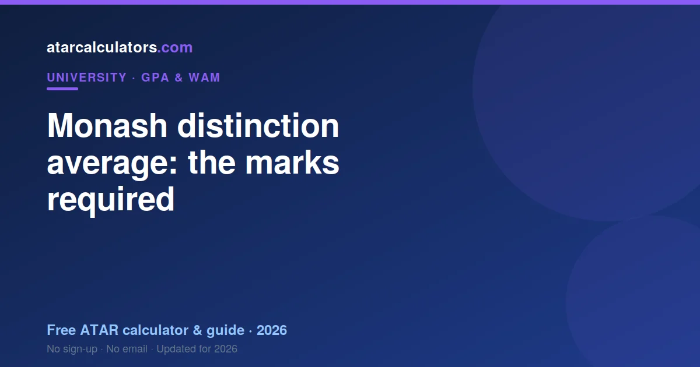

At Monash, a distinction average means a GPA of about 6 on the 7-point scale, where a Distinction is a mark of 70 to 79, lower than at many universities. A distinction average is the common benchmark for honours, scholarships and competitive postgraduate entry. You reach it by averaging your credit-weighted marks into the Distinction band, not by scoring a Distinction in every single unit.
Key takeaways
- A distinction average at Monash means a GPA of about 6 on the 7-point scale.
- At Monash, a Distinction is 70 to 79 (lower than most).
- It is the common benchmark for honours and scholarships.
- It signals strong, consistent performance.
- You do not need a distinction in every single unit.
- Focus on lifting your overall average into the band.

What a distinction average means
A distinction average means your credit-weighted results average into the Distinction band. At Monash, that corresponds to a GPA of about 6 on the 7-point scale. It is a widely recognised benchmark of strong performance.
So when someone says they have a distinction average, they mean their overall average sits in the Distinction range, not that every unit was a Distinction. It is the average that counts.
The distinction band at Monash
At Monash, a Distinction is a mark of 70 to 79, lower than at many universities. So a distinction average means your credit-weighted marks average into the 70 to 79 range, roughly a GPA of 6.
So to reach a distinction average, your credit-weighted marks need to average into that band. Knowing the exact range helps you see how far your current average is from it.
What GPA a distinction average equals
A Monash distinction average is about 6 on the 7-point scale. Because Monash’s Distinction band is 70 to 79, that 6 sits on lower marks than the same GPA at UNSW.
The marks behind it
The marks behind a Monash distinction average are 70 to 79 — lower than at many universities. That is a real difference, not a rounding quirk.
Why a distinction average matters at Monash
A Monash distinction average opens honours and most postgraduate coursework. Employers screening on it rarely know Monash’s band sits lower.
How to reach a distinction average
Reaching a distinction average at Monash means consistently clearing 70. The band position makes that a shorter climb than the sector-standard 75. Our guide to improving your university GPA covers how.
Do you need a distinction in every unit?
You do not need a distinction in every unit. The average is weighted by credit points, so a strong result in a large unit carries further.
Is a distinction average good at Monash?
A distinction average is a good result at Monash and the usual benchmark for honours entry. See what counts as a good GPA at Monash.
Check your average
To see whether you are on track for a distinction average, use our Monash GPA calculator. Enter your grades to get your GPA, and see how close you are to a 6.
Then target the units that will lift your average into the Distinction band, and track your progress each semester.
A rising average helps
A distinction average built on a rising trend reads better than a flat one. Monash weights by credit points, so later units carry weight.
A plan to get there
To plan for a Monash distinction average, work backwards from 70 across your remaining credit points, then read improving your university GPA.
Common questions
What is a distinction average at Monash?
A distinction average at Monash means your credit-weighted results average into the Distinction band, which corresponds to a GPA of about 6 on the 7-point scale. It is a common benchmark for honours and scholarships.
What marks do I need for a distinction at Monash?
A Distinction at Monash is a mark of 70 to 79, lower than at some universities. A distinction average means your credit-weighted marks average into that range, roughly a GPA of 6.
What GPA equals a distinction average at Monash?
On the 7-point scale, a distinction average is a GPA of about 6, since a Distinction maps to 6 grade points. So a distinction average and a GPA of 6 describe the same level.
Is a distinction average good at Monash?
Yes. A distinction average is a strong, competitive result at Monash, well regarded for honours, postgraduate admission and graduate jobs, and it places you near the top of most cohorts.